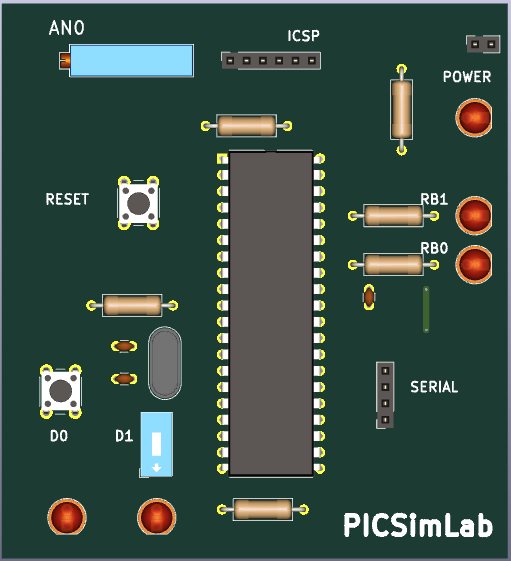

B.1.2 Board Picture
The PNG board picture was taken from Kicad 3D viewer. The picture image is saved as “share/board/x/board.png”.

It is also possible to use images in SVG format for better viewing quality. PCBDraw can be used to convert a Kicad PCB project to an SVG image.